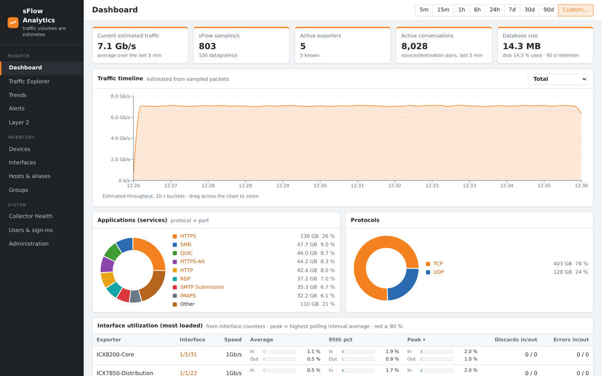

sFlow Analytics
By Frederic Muffat-Es-Jacques
Self-hosted sFlow collector and traffic analytics for RUCKUS ICX switches (and any sFlow v5 device). Answer "who is saturating this uplink?" and "how is my network used?" in a few clicks, with no license, no agent and no extra hardware: the switches already export sFlow.
Key features
- Traffic Explorer: top talkers, applications, protocols, conversations (one-way or both directions), VLANs, per switch, per port or per group; every filter combines and every view is a bookmarkable URL; CSV export.
- Flow map: who talks to whom as a Sankey diagram (hosts, services, ports, VLANs, groups), for the whole network, one switch or one interface.
- Port health: exact utilization from interface counters (average, 95th percentile, peak), discards and errors, broadcast / multicast storm detection.
- Trends: day, week, month or year compared with the previous period (or a year before), from a 3-year hourly history per interface.
- Alerts: utilization, discards, broadcast storms, silent switches, host or group traffic thresholds; e-mail, Microsoft Teams / Slack webhooks, syslog.
- Reports: weekly and monthly PDF and Excel reports (monitored links, busiest ports, applications, talkers, trends, alerts), e-mailed and kept 90 days; "Report now" on any period.
Featured in The RUCKUS Vibe, October 2026.